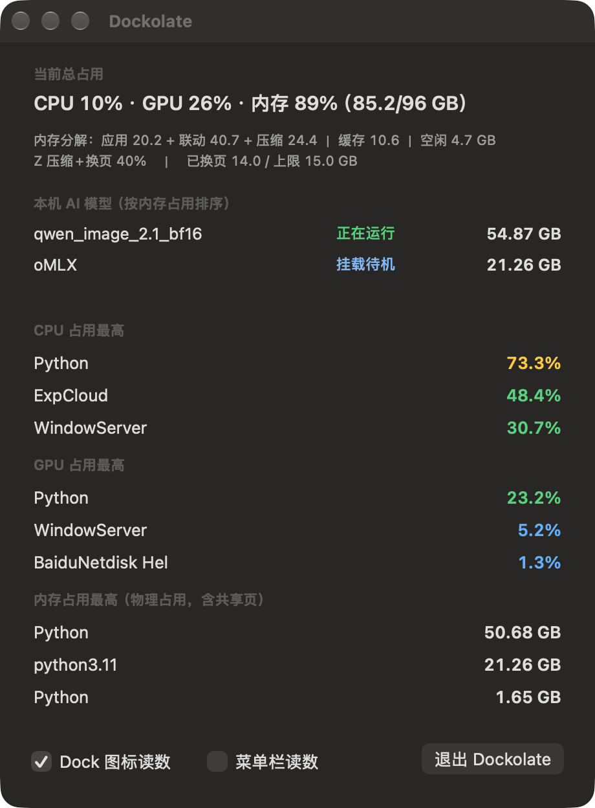

a chocolate bar in your Dock · macOS 13+ · MIT · Swift, no dependencies
A CPU / GPU / memory / swap water-level gauge living on your macOS Dock icon — and the only system monitor that tells you which local AI models are actually resident in RAM right now.

The Dock is always on screen, so four water-level cells answer “is this machine under pressure?” from across the room. Colour climbs blue → green → yellow → red as a level rises; the icon repaints only when an integer percentage changes, which is what keeps it at ~2 % CPU.
Every identified model server, sorted by footprint, with the memory it really holds — ri_phys_footprint, the same figure Activity Monitor shows.
“running” means the process is alive and it computed something in the last 12 s. Weights resident but silent reads “loaded-idle”, so you can tell the two apart at a glance.
sudoSums accumulatedGPUTime across AGXDeviceUserClient instances from ioreg instead of calling powermetrics — never a password prompt.
git clone https://github.com/autugit/dockolate.git && cd dockolate
./install.sh # build → ~/Applications → LaunchAgent (login item + auto-restart)Or take the prebuilt release. The app is ad-hoc signed, not notarized: first launch needs
right-click → Open, or xattr -d com.apple.quarantine /path/to/Dockolate.app.
Build-only is ./build.sh; uninstall is ./uninstall.sh. Requires macOS 13+ and the Xcode command line tools.
The build targets Apple Silicon — for Intel, change one target in build.sh to x86_64-apple-macosx13.0.
Ports are discovered, not assumed: Dockolate first looks at the ports the identified model processes actually listen on, so a server you moved to a custom port is still found. The built-in table is only a fallback, and anything else can be declared in engines.json.
| Engine | How the model name is obtained |
|---|---|
| Ollama | GET /api/ps (running) + GET /api/tags (downloaded → “not loaded”) |
| LM Studio | GET /api/v0/models, state == "loaded" |
llama.cpp llama-server | GET /v1/models, with --model argv fallback |
| vLLM / MLX / oMLX | GET /v1/models |
| ComfyUI | GET /queue → GET /history → ckpt_name / unet_name |
| A1111 / Forge / Draw Things | GET /sdapi/v1/options → sd_model_checkpoint |
| Fooocus / InvokeAI / KoboldCpp / text-generation-webui | GET /v1/models |
Any OpenAI-compatible server on a port you declare is probed the same way.
sudo?Dockolate sums accumulatedGPUTime over every AGXDeviceUserClient instance from ioreg instead of calling powermetrics, so it never prompts for a password. Total GPU load is on the Dock icon; the top three processes by GPU are in the window.
Open the window. Every identified model server is listed with the memory it actually holds (ri_phys_footprint, the Activity Monitor figure), tagged running / loaded-idle / failed — plus what Ollama or LM Studio have downloaded but not loaded.
Both, independently: the Dock icon is the gauge (default on), and the menu bar readout — a compact C12 G40 M63 — is an optional checkbox. With both off you get a plain window.
The build targets arm64-apple-macosx13.0. For Intel, change that one target in build.sh to x86_64-apple-macosx13.0; nothing else is architecture-specific.
No. Everything comes from public APIs — host_statistics64, host_processor_info, proc_pid_rusage, proc_pidinfo, ioreg. No privileged helper, no entitlement, no permission prompt.
No. HTTP requests only ever go to 127.0.0.1; there is no telemetry and no update check.
Ports are discovered from the ports the identified processes actually listen on. If a process cannot be identified, declare the port in ~/Library/Application Support/Dockolate/engines.json as {"extraPorts": [12345]}.
Those report into the menu bar or a window. Dockolate's premise is that the Dock is always on screen, so four water-level cells answer “is this machine under pressure?” from across the room — and it is the only one of the three that inventories the local AI models actually resident in RAM.
It sits in the Dock, and the 2×2 icon looks like a scored bar of chocolate.